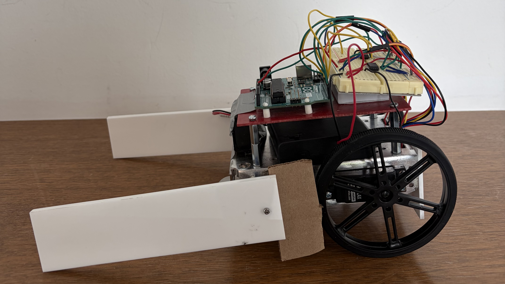

For this project, I worked with my teammates to design and build a functional robot that collected blocks during a timed competition against another team. There were four milestones and a final report for this project. I consistently contributed to every milestone and attended every team meeting.